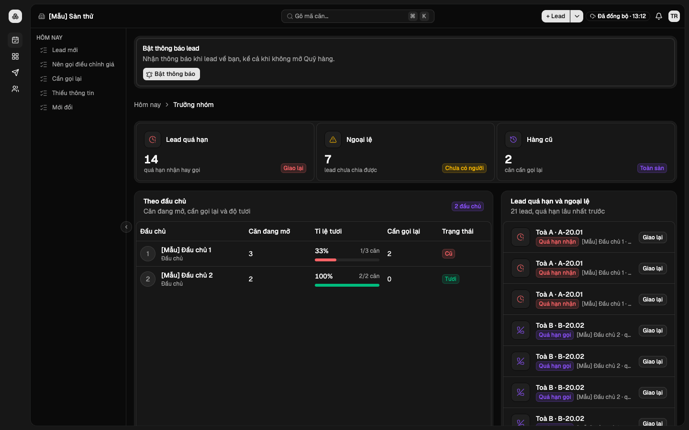
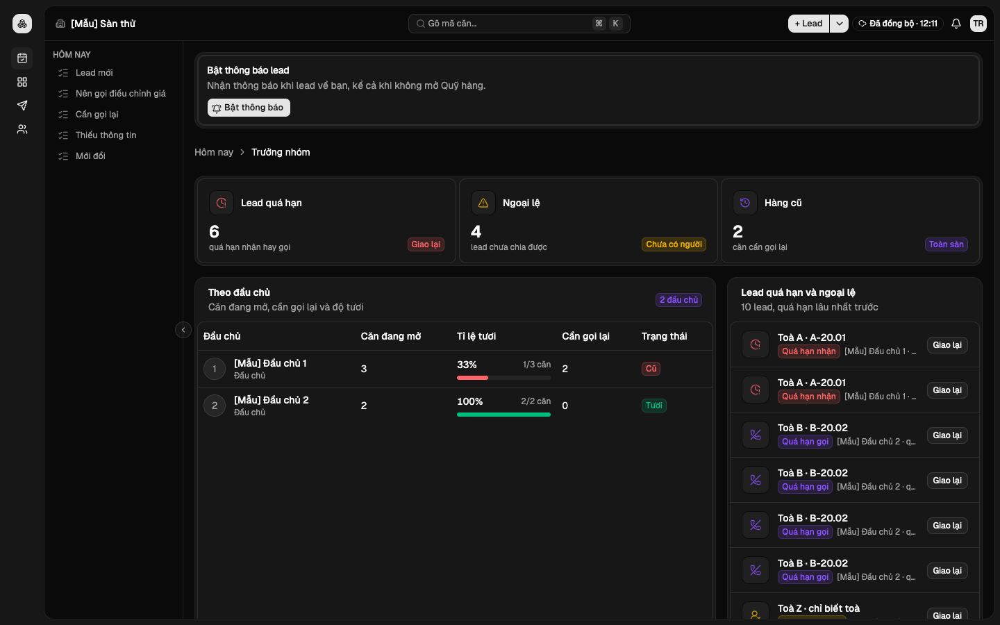
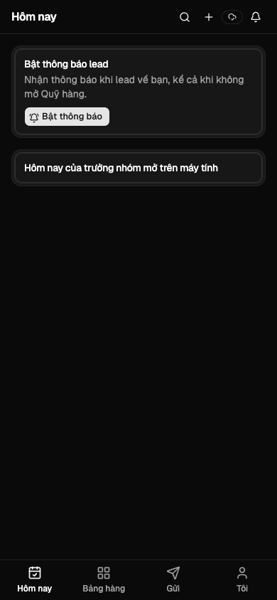

"Trưởng nhóm mở Hôm nay và thấy lead quá hạn để chia lại, hàng cũ theo từng đầu chủ, và ngoại lệ máy không tự quyết được"
Vì sao làm
Màn P1 (TN1, phác 29/10) Số đo hai tuần thử gần nhất (Tham chiếu §11): Thời gian lead → cuộc gọi đầu — ngưỡng số đặt trước khi thử.
Đã hứa
- AC-1 — Given một sàn có lead ở các tình trạng — chưa chia được, đã về người quá hạn nhận chưa nhận, đã nhận quá hạn gọi
- AC-2 — Given cùng sàn ấy, When vai khác trưởng nhóm (đầu chủ, telesales, quản trị sàn) hay người chưa đăng nhập gọi hai
- AC-3 — Given sàn có ba thành viên vai Đầu chủ (một người đang nghỉ, một người có hai lead đang mở) và một thành viên không
- AC-4 — Given danh sách căn trên máy với đầu chủ giữ, ngày xác nhận và trạng thái, When gọi
- AC-5 — (cross-layer) Given trưởng nhóm thấy một lead quá hạn trên `/today`, When bấm «Giao lại», chọn một đầu chủ và xác
- AC-6 — Given trưởng nhóm (không vai Đầu chủ) mở `/today` trên máy tính, When trang tải xong, Then thấy bố cục Bảng điều
- AC-7 — Given sáu trạng thái của bảng trạng thái (đang tải, mặc định, trống, lỗi, mất mạng, giao lỗi), When dựng màn ở mỗi
- AC-8 — Given người có vai Đầu chủ mà không có vai Trưởng nhóm, và người có cả hai vai, When mở `/today`, Then người chỉ có
- AC-9 — Given bản đồ khuôn `design/patterns/`, When chạy lưới khuôn của kho, Then có nhóm `hom-nay-truong-nhom` nhận diện
Thiết kế
docs/superpowers/specs/2026-11-04-hom-nay-truong-nhom-design.md
Quyết định
- 2026-11-04 · Máy · approach · S1 — Đã tra tri thức: 42Kho đã khai tri_thuc — bước thiết kế tra trang trước khi chọn.
- 2026-11-04 · Máy · approach · S1 — Màn của trưởng nhóm trên máy tính gồm lead quá hạn, hàng cũ theo người, ngoại lệ — ba ô số, hàng đợi có nút giao lại, bảng theo đầu chủ.Tham chiếu §9 dòng Hôm nay của Trưởng nhóm đã chốt nội dung và thiết bị.
- 2026-11-04 · Máy · approach · S1 — Bố cục Bảng điều khiển của ADR-0024 (stats-7 + data-grid-grouping-2) cho vùng trưởng nhóm.ADR-0024 đã gán bố cục này cho Hôm nay trưởng nhóm.
- 2026-11-04 · Máy · approach · S1 — Không có bản điện thoại của bảng điều khiển; khổ điện thoại hiện dòng «mở trên máy tính».ADR-0024 nói Bảng điều khiển không có trên điện thoại.
- 2026-11-04 · Máy · approach · S1 — Hàng cũ theo đầu chủ tính trên máy từ kho đồng bộ của trưởng nhóm bằng hàm lõi, ngưỡng gọi lại đọc từ sổ (#4).Khuôn Hôm nay đã chốt luật KH-hn-tren-may: căn đọc từ kho trên máy; ngưỡng là điểm sổ hàng 81.
- 2026-11-04 · Máy · approach · S1 — Lead quá hạn đang mở đọc qua lối API mới GET /api/v1/team/lead-queue, tính từ trạng thái lead và hai hạn đã đóng dấu, không từ lời báo đã ghi.Bảng lead_alerts không có cột «đã xử lý» — lời báo cũ không nói lead còn mở hay không.
- 2026-11-04 · Máy · approach · S1 — Danh sách đầu chủ để giao qua lối API mới GET /api/v1/team/listing-agents (mã, tên, nghỉ, lead mở) chỉ cho trưởng nhóm; không mở GET /company/members của quản trị.Trưởng nhóm phải chọn người nhận khi giao lại mà hiện không lối nào trả danh sách đầu chủ cho vai này.
- 2026-11-04 · Máy · approach · S1 — Giao lại dùng nguyên lệnh POST /leads/{id}/assign của hàng 25; không tự giao lại.Hàng 25 đã chốt trưởng nhóm giao tay sau lời báo, không máy tự giao.
- 2026-11-04 · Máy · approach · S1 — Hỏi-1 — ngoại lệ bản đầu = lead «chưa chia được»; ô «Ngoại lệ» đếm chúng, ô «Lead quá hạn» đếm lead đã về người quá hạn nhận hay gọi.«Chưa chia được» là loại ngoại lệ duy nhất máy đã ghi; «ngoại lệ khi lên bảng» chưa có mã ở hàng nào.
- 2026-11-04 · Máy · approach · S1 — Hỏi-2 — người có cả vai Trưởng nhóm lẫn Đầu chủ: /today hiện bảng điều khiển của trưởng nhóm trước, hàng đợi của chính mình bên dưới.Tham chiếu chưa nói người hai vai thấy gì ở Hôm nay; đây là nghĩa sản phẩm người dùng thấy.
- 2026-11-04 · Máy · approach · S1 — Hỏi-3 — ba ô và cách chia ngăn của bảng điều khiển giữ cứng ở bản đầu (ngưỡng vẫn đọc từ sổ), lý do nghĩa chuẩn để so giữa các sàn.Luật thiết kế đối chiếu (ADR-0022): mỗi dòng «ta cứng — họ cấu hình» thành một câu hỏi ở Cổng Phạm vi.
- 2026-11-04 · Máy · approach · S1 — Hỏi-4 — kết nối ReUI của phiên đang bị từ chối (401), nên trang ba lối của nhóm khuôn mới chưa cài được khối ReUI: khuyến nghị duyệt phạm vi dữ liệu và luồng bằng chữ ngay, chủ kho đăng nhập lại ReUI (/mcp), máy dựng trang ba lối và chạy design-pass trước khi code màn thật ở S3.ADR-0019 đòi bước phân kỳ ba lối khi thêm nhóm khuôn mới; lối ReUI cần MCP reui đang hỏng.
- 2026-11-04 · Máy · descope · S1 — bỏ coverage-scan — câu giao và Tham chiếu §9 đã chốt nội dung màn, trục ghi tay ở Coverage; đổi lại không có bằng chứng độ phủ từ quét hình tháiKhông gian AC theo ba khối dữ liệu đã nêu ở câu giao cộng quyền, trạng thái, vai.
- 2026-11-04 · Máy · approach · S1 — Phạm vi của trưởng nhóm ở màn này là cả sàn: hàng đợi lead và danh sách đầu chủ lấy mọi lead, mọi đầu chủ của sàn đang làm.Sổ điểm biến thiên khoá K5 ghi «Nhóm» chưa có — sàn chưa có đơn vị nhóm nào để lọc theo.
- 2026-11-04 · Máy · approach · S1 — Hỏi-5 — hàng cũ theo đầu chủ đếm trên máy trưởng nhóm, tức chỉ căn trưởng nhóm thấy (căn «Toàn sàn»); màn ghi rõ «chỉ tính căn toàn sàn» dưới bảng.Vai không mở «Chỉ tôi» (visibility/index.ts): căn chưa từng Đang bán của đầu chủ không xuống máy trưởng nhóm, nên đếm trên máy thiếu chúng.
- 2026-11-04 · Máy · approach · S1 — Trang ba lối của nhóm khuôn mới dựng bằng CLI ReUI (khoá Pro) và gửi kèm thẻ Cổng Phạm vi; bỏ Hỏi-4.Giám sát 04/11: vo-va-ia.md §2 ghi khoá ReUI Pro dùng được qua CLI, các dãy L, H, B đã dựng trang ba lối như vậy; chủ kho không duyệt UI bằng chữ.
- 2026-11-04 · Máy · approach · S1 — Chạy design-pass trước Cổng Phạm vi: trang ba lối /proto/hom-nay-truong-nhom (Trong kho · ReUI dashboard-6 · Vẽ mới), sáu ảnh ở ba-loi/, máy dev tạm tắt sau khi chụp.Màn chạm giao diện và mở nhóm khuôn mới — ADR-0019 đòi bước phân kỳ ba lối; chủ kho không duyệt UI bằng chữ.
- 2026-11-04 · Máy · approach · S1 — Hỏi-6 — chọn lối dựng màn: khuyến nghị ReUI (dashboard-6 bỏ biểu đồ): ba ô số, bảng theo đầu chủ và hàng đợi giao lại đứng cạnh nhau trong một màn.Gu nhìn và cách đọc màn là việc của chủ kho (ADR-0019 bước phân kỳ).
- 2026-11-04 · Người (Manh Phan) · revisit · gate1 — Duyệt năm câu theo khuyến nghị: ngoại lệ = lead chưa chia được; người hai vai thấy bảng điều khiển trên, hàng đợi mình dưới; ba ô giữ cứng; hàng cũ đếm căn toàn sàn trên máy, ghi rõ dưới bảng; dựng lối ReUI (dashboard-6 bỏ biểu đồ).Chủ kho gõ «/acceptance-gate:approve hom-nay-truong-nhom duyệt»; thẻ ghi «duyệt» là nhận khuyến nghị của mọi câu Hỏi.
- 2026-11-04 · Người · seal · gate1 —
- 2026-11-04 · Máy · fix · S3 — Hàng đợi trưởng nhóm đọc «bây giờ» từ đồng hồ cơ sở dữ liệu; bài kiểm E1, E5 đặt mốc bằng cách lùi routed_at qua kết nối chủ thay cho tham số now của nhịp.Lối GET không nhận tham số giờ; nhịp chia chạy ở giờ thật nên dựng quá hạn phải lùi mốc giao.
- 2026-11-04 · Máy · fix · S3 — Đánh dấu nghỉ trong bài kiểm E3 dùng PUT /company/members/{id}/leave (lối thật của hàng 25), không phải POST như chữ evals.Lối hàng 25 đăng ký phương thức PUT.
- 2026-11-04 · Máy · fix · S3 — Tên hiển thị của đầu chủ lấy từ tài khoản như lời báo của hàng 25; tài khoản chưa đặt tên thì trả phần trước «@» của email, không trả email đầy đủ.Cùng nguồn tên với lời báo quá hạn để trưởng nhóm thấy một tên; tài khoản mời chưa có tên.
- 2026-11-04 · Máy · fix · S3 — Gỡ hai ngoai_le_han hẹn hàng 42 làm /today hết miễn luật bố cục: KhungHomNay dựng BoCuc «tràn», bỏ max-w ở vùng đầu chủ và trang mẫu hom-nay-dau-chu, khung xương tay thay bằng ChoTai «tràn» — màn đầu chủ nay tràn bề rộng.Khuôn hom-nay-dau-chu đã hẹn «Hôm nay chuyển sang bố cục ở hàng 42»; lint bố cục đỏ khi ngoại lệ hết hạn.
- 2026-11-04 · Máy · fix · S3 — Trạng thái đang tải của màn trưởng nhóm dùng chữ «Đang tải» (thiết kế chỉ nói khung xương); khi mất mạng màn có hai dải báo (của bố cục và của vùng).Hàm trạng thái cần một chữ để kiểm; dải mất mạng của BoCuc có sẵn ở hàng 91.
- 2026-11-04 · Máy · fix · S4-r1 — Ba eval ui-check (E6, E7, E10) thêm khối steps trỏ hai lệnh chỗ thử của hồ sơ: dung-d.mjs (sàn mẫu, căn Đang bán có người giữ, ba lead quá hạn qua lối API thật) và chay-ui.mjs (Chrome không đầu, in số đọc được và chụp ảnh).s4-args từ chối eval ui-check thiếu steps; người chấm cần một chỗ thử có lead quá hạn và căn có người giữ mới nhìn được màn.
- 2026-11-04 · Máy · fix · S4-r1 — Sửa hai khối catch rỗng (no-empty) trong lệnh dựng chỗ thử dung-d.mjs làm npm run lint đỏ ở lượt 1; ca ui-lint đỏ theo ngày (luật đợt 44) không sửa.Lượt 1 REJECT vì hai lệnh suite: lint (lỗi của chính hồ sơ) và ui-lint (đỏ trên main vì hạn «Chỗ hở» 2026-10-30).
- 2026-11-04 · Máy · fix · S4-r1 — Gộp main có PR hàng 34 (#111): bản đồ khuôn giữ cả nhóm «gui» và «hom-nay-truong-nhom»; hai ca ui-lint ghim số nhóm khuôn đổi 13 → 14 và số chỗ trạng thái 69 → 72; bộ ui-lint 456/456.Sau gộp, hai ca E5 đỏ vì đếm nhóm khuôn ghim cứng 13 mà kho nay có 14 nhóm (thêm gui và hom-nay-truong-nhom).
- 2026-11-04 · Máy · fix · S4-r2 — Lệnh chụp E6 chọn đầu chủ đầu tiên còn chọn được thay vì cố định [Mẫu] Đầu chủ 2; sửa lời bước E6 theo.Lượt 2 E6 đỏ vì lead trên chỗ thử đã được giao cho Đầu chủ 2 ở lần chạy thử trước, nên mục ấy bị tắt (người đang giữ) và lệnh không chọn được ai — lỗi của thước, màn tắt đúng mục.
- 2026-11-04 · Máy · revisit · gate2 — Ngoài-1: ghi Known limitsmáy tự định tuyến theo đề xuất S4 «known-limits» — kho bật feature_loop.ngoai_n_tu_dinh_tuyen
- 2026-11-04 · Máy · revisit · gate2 — Ngoài-2: ghi Known limitsmáy tự định tuyến theo đề xuất S4 «known-limits» — kho bật feature_loop.ngoai_n_tu_dinh_tuyen
- 2026-11-04 · Máy · revisit · gate2 — Ngoài-3: ghi Known limitsmáy tự định tuyến theo đề xuất S4 «known-limits» — kho bật feature_loop.ngoai_n_tu_dinh_tuyen
- 2026-11-04 · Máy · revisit · gate2 — Ngoài-4: ghi Known limitsmáy tự định tuyến theo đề xuất S4 «known-limits» — kho bật feature_loop.ngoai_n_tu_dinh_tuyen
- 2026-11-04 · Máy · revisit · gate2 — Ngoài-5: ghi Known limitsmáy tự định tuyến theo đề xuất S4 «known-limits» — kho bật feature_loop.ngoai_n_tu_dinh_tuyen
- 2026-11-04 · Máy · revisit · gate2 — Ngoài-6: ghi Known limitsmáy tự định tuyến theo đề xuất S4 «known-limits» — kho bật feature_loop.ngoai_n_tu_dinh_tuyen
- 2026-11-04 · Máy · revisit · gate2 — Ngoài-7: ghi Known limitsmáy tự định tuyến theo đề xuất S4 «known-limits» — kho bật feature_loop.ngoai_n_tu_dinh_tuyen
- 2026-11-04 · Máy · revisit · gate2 — Ngoài-8: ghi Known limitsmáy tự định tuyến theo đề xuất S4 «known-limits» — kho bật feature_loop.ngoai_n_tu_dinh_tuyen
Bằng chứng
Các eval
| Eval | Tiêu chí | Loại | Verdict | run_id | verified_at |
|---|---|---|---|---|---|
| E1 | AC-1 | test | PASS | minted-hom-nay-truong-nhom-E1-r1 | 2026-11-04T05:10:32Z |
| E2 | AC-2 | test | PASS | minted-hom-nay-truong-nhom-E2-r1 | 2026-11-04T05:10:32Z |
| E3 | AC-3 | test | PASS | minted-hom-nay-truong-nhom-E3-r1 | 2026-11-04T05:10:32Z |
| E4 | AC-4 | test | PASS | minted-hom-nay-truong-nhom-E4-r1 | 2026-11-04T05:10:32Z |
| E5 | AC-5 | test | PASS | minted-hom-nay-truong-nhom-E5-r1 | 2026-11-04T05:10:32Z |
| E6 | AC-5 | ui-check | PASS | minted-hom-nay-truong-nhom-E6-r3 | 2026-11-04T06:16:47Z |
| E7 | AC-6 | ui-check | PASS | minted-hom-nay-truong-nhom-E7-r3 | 2026-11-04T06:16:47Z |
| E8 | AC-7 | test | PASS | minted-hom-nay-truong-nhom-E8-r1 | 2026-11-04T05:10:32Z |
| E9 | AC-8 | test | PASS | minted-hom-nay-truong-nhom-E9-r1 | 2026-11-04T05:10:32Z |
| E10 | AC-8 | ui-check | PASS | minted-hom-nay-truong-nhom-E10-r3 | 2026-11-04T06:16:47Z |
| E11 | AC-9 | script | PASS | minted-hom-nay-truong-nhom-E11-r2 | 2026-11-04T06:11:47Z |
Chi tiết từng eval
PASS E1 · test
AC-1: Given một sàn có lead ở các tình trạng — chưa chia được, đã về người quá hạn nhận chưa nhận, đã nhận quá hạn gọi
carry-forward từ round 1 — delta không chạm paths của eval
PASS E2 · test
AC-2: Given cùng sàn ấy, When vai khác trưởng nhóm (đầu chủ, telesales, quản trị sàn) hay người chưa đăng nhập gọi hai
carry-forward từ round 1 — delta không chạm paths của eval
PASS E3 · test
AC-3: Given sàn có ba thành viên vai Đầu chủ (một người đang nghỉ, một người có hai lead đang mở) và một thành viên không
carry-forward từ round 1 — delta không chạm paths của eval
PASS E4 · test
AC-4: Given danh sách căn trên máy với đầu chủ giữ, ngày xác nhận và trạng thái, When gọi
carry-forward từ round 1 — delta không chạm paths của eval
PASS E5 · test
AC-5: (cross-layer) Given trưởng nhóm thấy một lead quá hạn trên `/today`, When bấm «Giao lại», chọn một đầu chủ và xác
carry-forward từ round 1 — delta không chạm paths của eval
PASS E6 · ui-check
AC-5: (cross-layer) Given trưởng nhóm thấy một lead quá hạn trên `/today`, When bấm «Giao lại», chọn một đầu chủ và xác
e6-ket-qua: bấm=đã bấm; chọn=đã chọn một đầu chủ mẫu; không cần xác nhận thêm. Lead quá hạn trước 18, sau 17 (giảm 1); số giao lại trước 28, sau 27 (giảm 1). Frames: evidence/E6-truoc-1440.png, evidence/E6-sau-1440.png.
PASS E7 · ui-check
AC-6: Given trưởng nhóm (không vai Đầu chủ) mở `/today` trên máy tính, When trang tải xong, Then thấy bố cục Bảng điều



Dựng dãy D thành công: hàng đợi 29 dòng, quá hạn nhận 9 cộng quá hạn gọi 10 bằng 19; chưa chia được 10. Ô Lead quá hạn 19, Ngoại lệ 10, Hàng cũ 2; có Giao lại, có theo người, có toàn sàn, không có chữ Đang dựng. Đã tắt máy dev.
PASS E8 · test
AC-7: Given sáu trạng thái của bảng trạng thái (đang tải, mặc định, trống, lỗi, mất mạng, giao lỗi), When dựng màn ở mỗi
carry-forward từ round 1 — delta không chạm paths của eval
PASS E9 · test
AC-8: Given người có vai Đầu chủ mà không có vai Trưởng nhóm, và người có cả hai vai, When mở `/today`, Then người chỉ có
carry-forward từ round 1 — delta không chạm paths của eval
PASS E10 · ui-check
AC-8: Given người có vai Đầu chủ mà không có vai Trưởng nhóm, và người có cả hai vai, When mở `/today`, Then người chỉ có

Dòng «mở trên máy tính» có mặt; không có nút Giao lại, không có khối theo người, không có khối toàn sàn. Các ô Lead quá hạn, Ngoại lệ, Hàng cũ đều vắng. Đã tắt máy dev.
PASS E11 · script
AC-9: Given bản đồ khuôn `design/patterns/`, When chạy lưới khuôn của kho, Then có nhóm `hom-nay-truong-nhom` nhận diện
carry-forward từ round 2 — delta không chạm paths của eval
Vòng verify
- Round 1: E1-E5, E8, E9 chạy lần gốc (hồ sơ gốc); các eval này được mang tiếp sang các round sau.
- Round 2: E6 failed — lệnh chụp không chọn được đầu chủ để giao lại; E11 xanh. Returned to implementation.
- Round 3: lệnh chụp E6 sửa chọn đầu chủ còn chọn được; E6, E7, E10 và bảy lệnh suite chạy lại, xanh; E1-E5, E8, E9, E11 mang tiếp (delta không chạm paths). Verdict PASS.
Tài nguyên
| Khối | Tác tử | Token đầu ra |
|---|---|---|
| S4 round 1 | 20 | 45.681 |
| S4 round 2 | 17 | 35.288 |
| S4 round 3 | 15 | 36.358 |
3 lượt chấm · tổng 117.327 token
Giới hạn và ngoài hợp đồng
- Đẩy thông báo lead quá hạn lên điện thoại trưởng nhóm — hàng 26.
- Phễu, tốc độ gọi theo người, biểu đồ — trang Đội.
- «Ngoại lệ khi lên bảng», lead căn trùng như loại ngoại lệ — chưa có mã (Hỏi-1).
- Bản điện thoại của bảng điều khiển (ADR-0024).
- Đổi đầu chủ giữ căn từ bảng hàng cũ — lối có sẵn ở hồ sơ căn.
Giao
chưa ghi quan sát production
Giá trị
- Câu hỏi phép đo trả lời: [đề xuất] đã đạt «Trưởng nhóm mở Hôm nay và thấy lead quá hạn để chia lại, hàng cũ theo từng đầu chủ, và ngoại lệ máy không tự quyết được» chưa? — chưa đo
- Kết quả nào là SỐNG: [đề xuất] Trưởng nhóm mở Hôm nay và thấy lead quá hạn để chia lại, hàng cũ theo từng đầu chủ, và ngoại lệ máy không tự quyết được — chưa đo
- Kết quả nào là CHẾT: [đề xuất] chưa đạt «Trưởng nhóm mở Hôm nay và thấy lead quá hạn để chia lại, hàng cũ theo từng đầu chủ, và ngoại lệ máy không tự quyết được» khi hết timebox — chưa đo
- Timebox: … — chưa đo